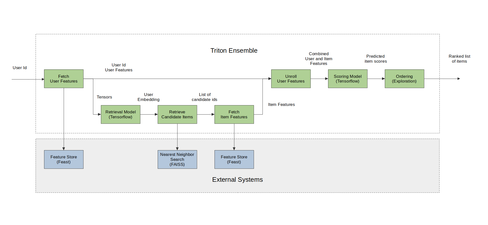

# Copyright 2023 NVIDIA Corporation. All Rights Reserved.
#
# Licensed under the Apache License, Version 2.0 (the "License");
# you may not use this file except in compliance with the License.
# You may obtain a copy of the License at
#
# http://www.apache.org/licenses/LICENSE-2.0
#
# Unless required by applicable law or agreed to in writing, software
# distributed under the License is distributed on an "AS IS" BASIS,
# WITHOUT WARRANTIES OR CONDITIONS OF ANY KIND, either express or implied.
# See the License for the specific language governing permissions and
# limitations under the License.
# ================================
# Each user is responsible for checking the content of datasets and the
# applicable licenses and determining if suitable for the intended use.
Deploying a Multi-Stage RecSys into Production with Merlin Systems and Triton Inference Server#
This notebook is created using the latest stable merlin-tensorflow container.
At this point, when you reach out to this notebook, we expect that you have already executed the first notebook 01-Building-Recommender-Systems-with-Merlin.ipynb and exported all the required files and models.
We are going to generate recommended items for a given user query (user_id) by following the steps described in the figure below.

Merlin Systems library have the set of operators to be able to serve multi-stage recommender systems built with Tensorflow on Triton Inference Server(TIS) easily and efficiently. Below, we will go through these operators and demonstrate their usage in serving a multi-stage system on Triton.
Import required libraries and functions#
At this step, we assume you already installed feast and faiss-gpu (or -cpu) libraries when running the first notebook 01-Building-Recommender-Systems-with-Merlin.ipynb.
In case you need to install them for running this example on GPU, execute the following script in a cell.
%pip install "feast<0.31" faiss-gpu
or the following script in a cell for CPU.
%pip install tensorflow-cpu "feast<0.31" faiss-cpu
import os
import numpy as np
import pandas as pd
import feast
import seedir as sd
from nvtabular import ColumnSchema, Schema
from merlin.systems.dag.ensemble import Ensemble
from merlin.systems.dag.ops.softmax_sampling import SoftmaxSampling
from merlin.systems.dag.ops.tensorflow import PredictTensorflow
from merlin.systems.dag.ops.unroll_features import UnrollFeatures
from merlin.systems.triton.utils import send_triton_request
from merlin.systems.dag.ops.workflow import TransformWorkflow
/usr/local/lib/python3.8/dist-packages/cudf/utils/metadata/orc_column_statistics_pb2.py:19: DeprecationWarning: Call to deprecated create function FileDescriptor(). Note: Create unlinked descriptors is going to go away. Please use get/find descriptors from generated code or query the descriptor_pool.
DESCRIPTOR = _descriptor.FileDescriptor(
/usr/local/lib/python3.8/dist-packages/cudf/utils/metadata/orc_column_statistics_pb2.py:37: DeprecationWarning: Call to deprecated create function FieldDescriptor(). Note: Create unlinked descriptors is going to go away. Please use get/find descriptors from generated code or query the descriptor_pool.
_descriptor.FieldDescriptor(
/usr/local/lib/python3.8/dist-packages/cudf/utils/metadata/orc_column_statistics_pb2.py:30: DeprecationWarning: Call to deprecated create function Descriptor(). Note: Create unlinked descriptors is going to go away. Please use get/find descriptors from generated code or query the descriptor_pool.
_INTEGERSTATISTICS = _descriptor.Descriptor(
2023-06-29 19:50:56.885234: I tensorflow/core/platform/cpu_feature_guard.cc:194] This TensorFlow binary is optimized with oneAPI Deep Neural Network Library (oneDNN) to use the following CPU instructions in performance-critical operations: SSE3 SSE4.1 SSE4.2 AVX
To enable them in other operations, rebuild TensorFlow with the appropriate compiler flags.
/usr/local/lib/python3.8/dist-packages/tensorflow/core/framework/tensor_shape_pb2.py:18: DeprecationWarning: Call to deprecated create function FileDescriptor(). Note: Create unlinked descriptors is going to go away. Please use get/find descriptors from generated code or query the descriptor_pool.
DESCRIPTOR = _descriptor.FileDescriptor(
/usr/local/lib/python3.8/dist-packages/tensorflow/core/framework/tensor_shape_pb2.py:36: DeprecationWarning: Call to deprecated create function FieldDescriptor(). Note: Create unlinked descriptors is going to go away. Please use get/find descriptors from generated code or query the descriptor_pool.
_descriptor.FieldDescriptor(
/usr/local/lib/python3.8/dist-packages/tensorflow/core/framework/tensor_shape_pb2.py:29: DeprecationWarning: Call to deprecated create function Descriptor(). Note: Create unlinked descriptors is going to go away. Please use get/find descriptors from generated code or query the descriptor_pool.
_TENSORSHAPEPROTO_DIM = _descriptor.Descriptor(
/usr/local/lib/python3.8/dist-packages/tensorflow/core/framework/types_pb2.py:19: DeprecationWarning: Call to deprecated create function FileDescriptor(). Note: Create unlinked descriptors is going to go away. Please use get/find descriptors from generated code or query the descriptor_pool.
DESCRIPTOR = _descriptor.FileDescriptor(
/usr/local/lib/python3.8/dist-packages/tensorflow/core/framework/types_pb2.py:33: DeprecationWarning: Call to deprecated create function EnumValueDescriptor(). Note: Create unlinked descriptors is going to go away. Please use get/find descriptors from generated code or query the descriptor_pool.
_descriptor.EnumValueDescriptor(
/usr/local/lib/python3.8/dist-packages/tensorflow/core/framework/types_pb2.py:27: DeprecationWarning: Call to deprecated create function EnumDescriptor(). Note: Create unlinked descriptors is going to go away. Please use get/find descriptors from generated code or query the descriptor_pool.
_DATATYPE = _descriptor.EnumDescriptor(
/usr/local/lib/python3.8/dist-packages/tensorflow/core/framework/types_pb2.py:287: DeprecationWarning: Call to deprecated create function FieldDescriptor(). Note: Create unlinked descriptors is going to go away. Please use get/find descriptors from generated code or query the descriptor_pool.
_descriptor.FieldDescriptor(
/usr/local/lib/python3.8/dist-packages/tensorflow/core/framework/types_pb2.py:280: DeprecationWarning: Call to deprecated create function Descriptor(). Note: Create unlinked descriptors is going to go away. Please use get/find descriptors from generated code or query the descriptor_pool.
_SERIALIZEDDTYPE = _descriptor.Descriptor(
/usr/local/lib/python3.8/dist-packages/tensorflow/core/framework/resource_handle_pb2.py:20: DeprecationWarning: Call to deprecated create function FileDescriptor(). Note: Create unlinked descriptors is going to go away. Please use get/find descriptors from generated code or query the descriptor_pool.
DESCRIPTOR = _descriptor.FileDescriptor(
/usr/local/lib/python3.8/dist-packages/tensorflow/core/framework/resource_handle_pb2.py:39: DeprecationWarning: Call to deprecated create function FieldDescriptor(). Note: Create unlinked descriptors is going to go away. Please use get/find descriptors from generated code or query the descriptor_pool.
_descriptor.FieldDescriptor(
/usr/local/lib/python3.8/dist-packages/merlin/dtypes/mappings/torch.py:43: UserWarning: PyTorch dtype mappings did not load successfully due to an error: No module named 'torch'
warn(f"PyTorch dtype mappings did not load successfully due to an error: {exc.msg}")
/usr/local/lib/python3.8/dist-packages/nvtabular/loader/__init__.py:19: DeprecationWarning: The `nvtabular.loader` module has moved to a new repository, at https://github.com/NVIDIA-Merlin/dataloader . Support for importing from `nvtabular.loader` is deprecated, and will be removed in a future version. Please update your imports to refer to `merlinloader`.
warnings.warn(
Register our features on feature store#
The Feast feature registry is a central catalog of all the feature definitions and their related metadata(read more here). We have defined our user and item features definitions in the user_features.py and item_features.py files. With FeatureView() users can register data sources in their organizations into Feast, and then use those data sources for both training and online inference. In the user_features.py and item_features.py files, we are telling Feast where to find user and item features.
Before we move on to the next steps, we need to perform feast applycommand as directed below. With that, we register our features, we can apply the changes to create our feature registry and store all entity and feature view definitions in a local SQLite online store called online_store.db.
BASE_DIR = os.environ.get("BASE_DIR", "/Merlin/examples/Building-and-deploying-multi-stage-RecSys/")
DATA_FOLDER = os.environ.get("DATA_FOLDER", "/workspace/data/")
# define feature repo path
feast_repo_path = os.path.join(BASE_DIR, "feast_repo/feature_repo/")
%cd $feast_repo_path
!feast apply
/raid/workshared/merlin/examples/Building-and-deploying-multi-stage-RecSys/feast_repo/feature_repo
Created entity user_id
Created entity item_id
Created feature view user_features
Created feature view item_features
Created sqlite table feast_repo_item_features
Created sqlite table feast_repo_user_features
Loading features from offline store into an online store#
After we execute apply and registered our features and created our online local store, now we need to perform materialization operation. This is done to keep our online store up to date and get it ready for prediction. For that we need to run a job that loads feature data from our feature view sources into our online store. As we add new features to our offline stores, we can continuously materialize them to keep our online store up to date by finding the latest feature values for each user.
When you run the feast materialize .. command below, you will see a message Materializing 2 feature views from 1995-01-01 01:01:01+00:00 to 2025-01-01 01:01:01+00:00 into the sqlite online store will be printed out.
Note that materialization step takes some time
!feast materialize 1995-01-01T01:01:01 2025-01-01T01:01:01
Materializing 2 feature views from 1995-01-01 01:01:01+00:00 to 2025-01-01 01:01:01+00:00 into the sqlite online store.
user_features:
100%|| 460/460 [00:00<00:00, 2521.27it/s]
item_features:
100%|| 458/458 [00:00<00:00, 3335.12it/s]
Now, lets check our feature_repo structure again after we ran apply and materialize commands.
# set up the base dir to for feature store
sd.seedir(os.path.join(BASE_DIR, 'feast_repo'), style='lines', itemlimit=10, depthlimit=5, exclude_folders=['.ipynb_checkpoints', '__pycache__'], sort=True)
feast_repo/
README.md
__init__.py
feature_repo/
__init__.py
data/
item_features.parquet
online_store.db
registry.db
user_features.parquet
feature_store.yaml
item_features.py
test_workflow.py
user_features.py
Set up Faiss index, create feature store client and objects for the Triton ensemble#
Create a folder for faiss index path
if not os.path.isdir(os.path.join(BASE_DIR, 'faiss_index')):
os.makedirs(os.path.join(BASE_DIR, 'faiss_index'))
Define paths for ranking model, retrieval model, and faiss index path
faiss_index_path = os.path.join(BASE_DIR, 'faiss_index', "index.faiss")
retrieval_model_path = os.path.join(BASE_DIR, "query_tower/")
ranking_model_path = os.path.join(BASE_DIR, "dlrm/")
QueryFaiss operator creates an interface between a FAISS Approximate Nearest Neighbors (ANN) Index and Triton Inference Server. For a given input query vector, we do an ANN search query to find the ids of top-k nearby nodes in the index.
setup_faiss is a utility function that will create a Faiss index from an embedding vector with using L2 distance.
from merlin.systems.dag.ops.faiss import QueryFaiss, setup_faiss
item_embeddings = pd.read_parquet(os.path.join(BASE_DIR, "item_embeddings.parquet"))
setup_faiss(item_embeddings, faiss_index_path, embedding_column="output_1")
WARNING clustering 458 points to 32 centroids: please provide at least 1248 training points
Create feature store client.
feature_store = feast.FeatureStore(feast_repo_path)
Fetch user features with QueryFeast operator from the feature store. QueryFeast operator is responsible for ensuring that our feast feature store can communicate correctly with tritonserver for the ensemble feast feature look ups.
from merlin.systems.dag.ops.feast import QueryFeast
user_attributes = ["user_id"] >> QueryFeast.from_feature_view(
store=feature_store,
view="user_features",
column="user_id",
include_id=True,
)
Materializing 1 feature views to 2023-06-29 19:51:06+00:00 into the sqlite online store.
user_features from 2025-01-01 01:01:01+00:00 to 2023-06-29 19:51:06+00:00:
0it [00:00, ?it/s]
from nvtabular import Workflow
nvt_workflow = Workflow.load(os.path.join(DATA_FOLDER, 'processed_nvt/workflow'))
user_subgraph = nvt_workflow.get_subworkflow("user")
user_features = user_attributes >> TransformWorkflow(user_subgraph)
Retrieve top-K candidate items using retrieval model that are relevant for a given user. We use PredictTensorflow() operator that takes a tensorflow model and packages it correctly for TIS to run with the tensorflow backend.
# prevent TF to claim all GPU memory
from merlin.dataloader.tf_utils import configure_tensorflow
configure_tensorflow()
<function tensorflow.python.dlpack.dlpack.from_dlpack(dlcapsule)>
topk_retrieval = int(
os.environ.get("topk_retrieval", "100")
)
retrieval = (
user_features
>> PredictTensorflow(retrieval_model_path)
>> QueryFaiss(faiss_index_path, topk=topk_retrieval)
)
2023-06-29 19:51:07.269579: I tensorflow/core/platform/cpu_feature_guard.cc:194] This TensorFlow binary is optimized with oneAPI Deep Neural Network Library (oneDNN) to use the following CPU instructions in performance-critical operations: SSE3 SSE4.1 SSE4.2 AVX
To enable them in other operations, rebuild TensorFlow with the appropriate compiler flags.
2023-06-29 19:51:10.430459: I tensorflow/core/common_runtime/gpu/gpu_device.cc:1621] Created device /job:localhost/replica:0/task:0/device:GPU:0 with 24576 MB memory: -> device: 0, name: Quadro RTX 8000, pci bus id: 0000:15:00.0, compute capability: 7.5
2023-06-29 19:51:10.431356: I tensorflow/core/common_runtime/gpu/gpu_device.cc:1621] Created device /job:localhost/replica:0/task:0/device:GPU:1 with 24576 MB memory: -> device: 1, name: Quadro RTX 8000, pci bus id: 0000:2d:00.0, compute capability: 7.5
WARNING:absl:Found untraced functions such as restored_function_body, restored_function_body, restored_function_body, restored_function_body, restored_function_body while saving (showing 5 of 52). These functions will not be directly callable after loading.
INFO:tensorflow:Assets written to: /tmp/tmpdalflmaz/assets
INFO:tensorflow:Assets written to: /tmp/tmpdalflmaz/assets
Fetch item features for the candidate items that are retrieved from the retrieval step above from the feature store.
item_attributes = retrieval["candidate_ids"] >> QueryFeast.from_feature_view(
store=feature_store,
view="item_features",
column="candidate_ids",
output_prefix="item",
include_id=True,
)
Materializing 1 feature views to 2023-06-29 19:51:14+00:00 into the sqlite online store.
item_features from 2025-01-01 01:01:01+00:00 to 2023-06-29 19:51:14+00:00:
0it [00:00, ?it/s]
item_subgraph = nvt_workflow.get_subworkflow("item")
item_features = item_attributes >> TransformWorkflow(item_subgraph)
Merge the user features and items features to create the all set of combined features that were used in model training using UnrollFeatures operator which takes a target column and joins the unroll columns to the target. This helps when broadcasting a series of user features to a set of items.
user_features_to_unroll = [
"user_id",
"user_shops",
"user_profile",
"user_group",
"user_gender",
"user_age",
"user_consumption_2",
"user_is_occupied",
"user_geography",
"user_intentions",
"user_brands",
"user_categories",
]
combined_features = item_features >> UnrollFeatures(
"item_id", user_features[user_features_to_unroll]
)
Rank the combined features using the trained ranking model, which is a DLRM model for this example. We feed the path of the ranking model to PredictTensorflow() operator.
ranking = combined_features >> PredictTensorflow(ranking_model_path)
WARNING:absl:Found untraced functions such as restored_function_body, restored_function_body, restored_function_body, restored_function_body, restored_function_body while saving (showing 5 of 98). These functions will not be directly callable after loading.
INFO:tensorflow:Assets written to: /tmp/tmpqdd_jn5e/assets
INFO:tensorflow:Assets written to: /tmp/tmpqdd_jn5e/assets
For the ordering we use SoftmaxSampling() operator. This operator sorts all inputs in descending order given the input ids and prediction introducing some randomization into the ordering by sampling items from the softmax of the predicted relevance scores, and finally returns top-k ordered items.
top_k=10
ordering = combined_features["item_id"] >> SoftmaxSampling(
relevance_col=ranking["click/binary_classification_task"], topk=top_k, temperature=0.00000001
)
Export Graph as Ensemble#
The last step is to create the ensemble artifacts that TIS can consume. To make these artifacts import the Ensemble class. This class represents an entire ensemble consisting of multiple models that run sequentially in TIS initiated by an inference request. It is responsible with interpreting the graph and exporting the correct files for TIS.
When we create an Ensemble object we feed the graph and a schema representing the starting input of the graph. After we create the ensemble object, we export the graph, supplying an export path for the ensemble.export() function. This returns an ensemble config which represents the entire inference pipeline and a list of node-specific configs.
Create the folder to export the models and config files.
if not os.path.isdir(os.path.join(BASE_DIR, 'poc_ensemble')):
os.makedirs(os.path.join(BASE_DIR, 'poc_ensemble'))
Create a request schema that we are going to use when sending a request to Triton Inference Server (TIS).
request_schema = Schema(
[
ColumnSchema("user_id", dtype=np.int32),
]
)
# define the path where all the models and config files exported to
export_path = os.path.join(BASE_DIR, 'poc_ensemble')
ensemble = Ensemble(ordering, request_schema)
ens_config, node_configs = ensemble.export(export_path)
# return the output column name
outputs = ensemble.graph.output_schema.column_names
print(outputs)
['ordered_ids', 'ordered_scores']
Lets check our export_path structure
sd.seedir(export_path, style='lines', itemlimit=10, depthlimit=5, exclude_folders=['.ipynb_checkpoints', '__pycache__'], sort=True)
poc_ensemble/
0_transformworkflowtriton/
1/
model.py
workflow/
categories/
unique.user_age.parquet
unique.user_brands.parquet
unique.user_categories.parquet
unique.user_consumption_2.parquet
unique.user_gender.parquet
unique.user_geography.parquet
unique.user_group.parquet
unique.user_id.parquet
unique.user_intentions.parquet
unique.user_is_occupied.parquet
metadata.json
workflow.pkl
config.pbtxt
1_predicttensorflowtriton/
1/
model.savedmodel/
assets/
fingerprint.pb
keras_metadata.pb
saved_model.pb
variables/
variables.data-00000-of-00001
variables.index
config.pbtxt
2_transformworkflowtriton/
1/
model.py
workflow/
categories/
unique.item_brand.parquet
unique.item_category.parquet
unique.item_id.parquet
unique.item_shop.parquet
metadata.json
workflow.pkl
config.pbtxt
3_predicttensorflowtriton/
1/
model.savedmodel/
.merlin/
input_schema.json
output_schema.json
assets/
fingerprint.pb
keras_metadata.pb
saved_model.pb
variables/
variables.data-00000-of-00001
variables.index
config.pbtxt
executor_model/
1/
ensemble/
ensemble.pkl
index.faiss
metadata.json
model.py
config.pbtxt
Starting Triton Server#
It is time to deploy all the models as an ensemble model to Triton Inference Serve TIS. After we export the ensemble, we are ready to start the TIS. You can start triton server by using the following command on your terminal:
tritonserver --model-repository=/ensemble_export_path/ --backend-config=tensorflow,version=2
For the --model-repository argument, specify the same path as the export_path that you specified previously in the ensemble.export method. This command will launch the server and load all the models to the server. Once all the models are loaded successfully, you should see READY status printed out in the terminal for each loaded model.
Retrieving Recommendations from Triton#
Once our models are successfully loaded to the TIS, we can now easily send a request to TIS and get a response for our query with send_triton_request utility function.
Lets send a request to TIS for a given user_id_raw value.
# read in data for request
from merlin.core.dispatch import make_df
# create a request to be sent to TIS
request = make_df({"user_id": [7]})
request["user_id"] = request["user_id"].astype(np.int32)
print(request)
user_id
0 7
Lets return raw item ids from TIS as top-k recommended items per given request.
response = send_triton_request(request_schema, request, outputs)
response
{'ordered_ids': array([[100, 168, 324, 79, 361, 294, 267, 289, 397, 189]], dtype=int32),
'ordered_scores': array([[0.5016385 , 0.50176895, 0.5017176 , 0.5024097 , 0.5018236 ,
0.5018286 , 0.50162375, 0.5015677 , 0.50175667, 0.5014358 ]],
dtype=float32)}
Thats it! You finished deploying a multi-stage Recommender Systems on Triton Inference Server using Merlin framework.